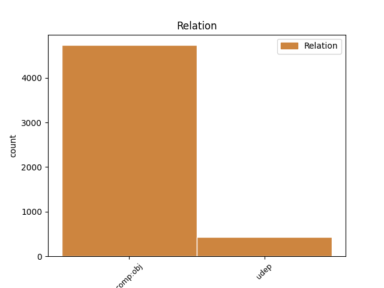
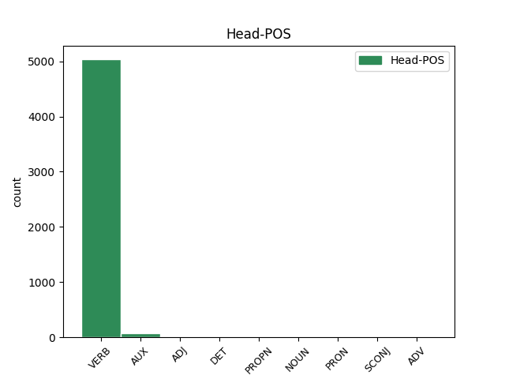
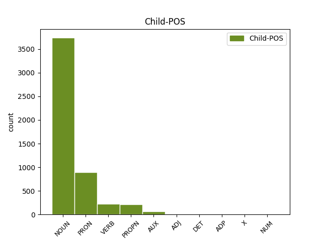

Distribution of features within this leaf



Agreement Rules sorted by frequency.
- When the dependent token is the direct object complements(comp:obj) of the head token,
1 Corrêa _ _ _ _ 0 _ _ _
2 trocaria trocar VERB _ Mood=Cnd|Number=Sing|Person=3|VerbForm=Fin 0 _ _ _
3 a _ _ _ _ 0 _ _ _
4 preocupação preocupação NOUN _ Gender=Fem|Number=Sing 2 comp:obj _ _
5 por _ _ _ _ 0 _ _ _
6 a _ _ _ _ 0 _ _ _
7 descontração _ _ _ _ 0 _ _ _
8 . _ _ _ _ 0 _ _ _
1 O _ _ _ _ 0 _ _ _
2 bárbaro _ _ _ _ 0 _ _ _
3 linchamento _ _ _ _ 0 _ _ _
4 de _ _ _ _ 0 _ _ _
5 três _ _ _ _ 0 _ _ _
6 pessoas _ _ _ _ 0 _ _ _
7 ocorrido ocorrer VERB _ Gender=Masc|Number=Sing|VerbForm=Part 0 _ _ _
8 esta _ _ _ _ 0 _ _ _
9 semana semana NOUN _ Gender=Fem|Number=Sing 7 udep _ _
10 em _ _ _ _ 0 _ _ _
11 o _ _ _ _ 0 _ _ _
12 Paraná _ _ _ _ 0 _ _ _
13 pode _ _ _ _ 0 _ _ _
14 ter _ _ _ _ 0 _ _ _
15 sido _ _ _ _ 0 _ _ _
16 particularmente _ _ _ _ 0 _ _ _
17 chocante _ _ _ _ 0 _ _ _
18 e _ _ _ _ 0 _ _ _
19 sem _ _ _ _ 0 _ _ _
20 dúvida _ _ _ _ 0 _ _ _
21 o _ _ _ _ 0 _ _ _
22 foi _ _ _ _ 0 _ _ _
23 , _ _ _ _ 0 _ _ _
24 filmado _ _ _ _ 0 _ _ _
25 e _ _ _ _ 0 _ _ _
26 transmitido _ _ _ _ 0 _ _ _
27 por _ _ _ _ 0 _ _ _
28 a _ _ _ _ 0 _ _ _
29 televisão _ _ _ _ 0 _ _ _
30 em _ _ _ _ 0 _ _ _
31 toda _ _ _ _ 0 _ _ _
32 a _ _ _ _ 0 _ _ _
33 sua _ _ _ _ 0 _ _ _
34 brutalidade _ _ _ _ 0 _ _ _
35 , _ _ _ _ 0 _ _ _
36 mas _ _ _ _ 0 _ _ _
37 constitui _ _ _ _ 0 _ _ _
38 apenas _ _ _ _ 0 _ _ _
39 mais _ _ _ _ 0 _ _ _
40 um _ _ _ _ 0 _ _ _
41 em _ _ _ _ 0 _ _ _
42 a _ _ _ _ 0 _ _ _
43 lista _ _ _ _ 0 _ _ _
44 de _ _ _ _ 0 _ _ _
45 os _ _ _ _ 0 _ _ _
46 crimes _ _ _ _ 0 _ _ _
47 de _ _ _ _ 0 _ _ _
48 esse _ _ _ _ 0 _ _ _
49 tipo _ _ _ _ 0 _ _ _
50 registrados _ _ _ _ 0 _ _ _
51 em _ _ _ _ 0 _ _ _
52 o _ _ _ _ 0 _ _ _
53 país _ _ _ _ 0 _ _ _
54 . _ _ _ _ 0 _ _ _
Disagree Examples:
1 É _ _ _ _ 0 _ _ _
2 um _ _ _ _ 0 _ _ _
3 pouco _ _ _ _ 0 _ _ _
4 a _ _ _ _ 0 _ _ _
5 versão _ _ _ _ 0 _ _ _
6 de _ _ _ _ 0 _ _ _
7 uma _ _ _ _ 0 _ _ _
8 espécie _ _ _ _ 0 _ _ _
9 de _ _ _ _ 0 _ _ _
10 « _ _ _ _ 0 _ _ _
11 outro _ _ _ _ 0 _ _ _
12 lado _ _ _ _ 0 _ _ _
13 de _ _ _ _ 0 _ _ _
14 a _ _ _ _ 0 _ _ _
15 noite _ _ _ _ 0 _ _ _
16 » _ _ _ _ 0 _ _ _
17 , _ _ _ _ 0 _ _ _
18 a _ _ _ _ 0 _ _ _
19 meio _ _ _ _ 0 _ _ _
20 caminho _ _ _ _ 0 _ _ _
21 entre _ _ _ _ 0 _ _ _
22 os _ _ _ _ 0 _ _ _
23 devaneios _ _ _ _ 0 _ _ _
24 de _ _ _ _ 0 _ _ _
25 uma _ _ _ _ 0 _ _ _
26 fauna _ _ _ _ 0 _ _ _
27 periférica _ _ _ _ 0 _ _ _
28 , _ _ _ _ 0 _ _ _
29 seja _ _ _ _ 0 _ _ _
30 de _ _ _ _ 0 _ _ _
31 Lisboa _ _ _ _ 0 _ _ _
32 , _ _ _ _ 0 _ _ _
33 Londres _ _ _ _ 0 _ _ _
34 , _ _ _ _ 0 _ _ _
35 Dublin _ _ _ _ 0 _ _ _
36 ou _ _ _ _ 0 _ _ _
37 Faro _ _ _ _ 0 _ _ _
38 e _ _ _ _ 0 _ _ _
39 Portimão _ _ _ _ 0 _ _ _
40 , _ _ _ _ 0 _ _ _
41 e _ _ _ _ 0 _ _ _
42 a _ _ _ _ 0 _ _ _
43 postura _ _ _ _ 0 _ _ _
44 circunspecta _ _ _ _ 0 _ _ _
45 de _ _ _ _ 0 _ _ _
46 os _ _ _ _ 0 _ _ _
47 fiéis _ _ _ _ 0 _ _ _
48 de _ _ _ _ 0 _ _ _
49 a _ _ _ _ 0 _ _ _
50 casa _ _ _ _ 0 _ _ _
51 , _ _ _ _ 0 _ _ _
52 que _ _ _ _ 0 _ _ _
53 de _ _ _ _ 0 _ _ _
54 ela _ _ _ _ 0 _ _ _
55 esperam esperar VERB _ Mood=Ind|Number=Plur|Person=3|Tense=Pres|VerbForm=Fin 0 _ _ _
56 a _ _ _ _ 0 _ _ _
57 música música NOUN _ Gender=Fem|Number=Sing 55 comp:obj _ _
58 « _ _ _ _ 0 _ _ _
59 geracionista _ _ _ _ 0 _ _ _
60 » _ _ _ _ 0 _ _ _
61 de _ _ _ _ 0 _ _ _
62 os _ _ _ _ 0 _ _ _
63 60 _ _ _ _ 0 _ _ _
64 ou _ _ _ _ 0 _ _ _
65 de _ _ _ _ 0 _ _ _
66 os _ _ _ _ 0 _ _ _
67 70 _ _ _ _ 0 _ _ _
68 . _ _ _ _ 0 _ _ _
1 « _ _ _ _ 0 _ _ _
2 Encomendem _ _ _ _ 0 _ _ _
3 nos _ _ _ _ 0 _ _ _
4 a _ _ _ _ 0 _ _ _
5 projectistas _ _ _ _ 0 _ _ _
6 de _ _ _ _ 0 _ _ _
7 fora _ _ _ _ 0 _ _ _
8 » _ _ _ _ 0 _ _ _
9 porque _ _ _ _ 0 _ _ _
10 , _ _ _ _ 0 _ _ _
11 se _ _ _ _ 0 _ _ _
12 as _ _ _ _ 0 _ _ _
13 obras _ _ _ _ 0 _ _ _
14 vierem _ _ _ _ 0 _ _ _
15 a _ _ _ _ 0 _ _ _
16 ser _ _ _ _ 0 _ _ _
17 financiadas _ _ _ _ 0 _ _ _
18 , _ _ _ _ 0 _ _ _
19 eles _ _ _ _ 0 _ _ _
20 até _ _ _ _ 0 _ _ _
21 saem _ _ _ _ 0 _ _ _
22 de _ _ _ _ 0 _ _ _
23 graça _ _ _ _ 0 _ _ _
24 , _ _ _ _ 0 _ _ _
25 já _ _ _ _ 0 _ _ _
26 que _ _ _ _ 0 _ _ _
27 , _ _ _ _ 0 _ _ _
28 em _ _ _ _ 0 _ _ _
29 esse _ _ _ _ 0 _ _ _
30 caso _ _ _ _ 0 _ _ _
31 , _ _ _ _ 0 _ _ _
32 « _ _ _ _ 0 _ _ _
33 os _ _ _ _ 0 _ _ _
34 fundos _ _ _ _ 0 _ _ _
35 comunitários _ _ _ _ 0 _ _ _
36 pagam _ _ _ _ 0 _ _ _
37 os _ _ _ _ 0 _ _ _
38 projectos _ _ _ _ 0 _ _ _
39 , _ _ _ _ 0 _ _ _
40 o _ _ _ _ 0 _ _ _
41 mesmo _ _ _ _ 0 _ _ _
42 não _ _ _ _ 0 _ _ _
43 acontecendo _ _ _ _ 0 _ _ _
44 quando _ _ _ _ 0 _ _ _
45 eles _ _ _ _ 0 _ _ _
46 são _ _ _ _ 0 _ _ _
47 feitos _ _ _ _ 0 _ _ _
48 por _ _ _ _ 0 _ _ _
49 os _ _ _ _ 0 _ _ _
50 GAT _ _ _ _ 0 _ _ _
51 » _ _ _ _ 0 _ _ _
52 , _ _ _ _ 0 _ _ _
53 dado dar VERB _ Gender=Masc|Number=Sing|VerbForm=Part 0 _ _ _
54 serem ser AUX _ Number=Plur|Person=3|VerbForm=Inf 53 comp:obj _ _
55 organismos _ _ _ _ 0 _ _ _
56 de _ _ _ _ 0 _ _ _
57 o _ _ _ _ 0 _ _ _
58 Estado _ _ _ _ 0 _ _ _
59 . _ _ _ _ 0 _ _ _
1 « _ _ _ _ 0 _ _ _
2 Estamos estar VERB _ Mood=Ind|Number=Plur|Person=1|Tense=Pres|VerbForm=Fin 12 comp:obj _ MWE=Estamos_a|MWEPOS=AUX
3 a _ _ _ _ 0 _ _ _
4 dotar _ _ _ _ 0 _ _ _
5 os _ _ _ _ 0 _ _ _
6 computadores _ _ _ _ 0 _ _ _
7 de _ _ _ _ 0 _ _ _
8 um _ _ _ _ 0 _ _ _
9 novo _ _ _ _ 0 _ _ _
10 sentido _ _ _ _ 0 _ _ _
11 » _ _ _ _ 0 _ _ _
12 disse dizer VERB _ Mood=Ind|Number=Sing|Person=3|Tense=Past|VerbForm=Fin 0 _ _ _
13 Steve _ _ _ _ 0 _ _ _
14 d' _ _ _ _ 0 _ _ _
15 Averio _ _ _ _ 0 _ _ _
16 , _ _ _ _ 0 _ _ _
17 director _ _ _ _ 0 _ _ _
18 de _ _ _ _ 0 _ _ _
19 marketing _ _ _ _ 0 _ _ _
20 para _ _ _ _ 0 _ _ _
21 a _ _ _ _ 0 _ _ _
22 Europa _ _ _ _ 0 _ _ _
23 de _ _ _ _ 0 _ _ _
24 a _ _ _ _ 0 _ _ _
25 Logitech _ _ _ _ 0 _ _ _
26 . _ _ _ _ 0 _ _ _
1 Junqueiro _ _ _ _ 0 _ _ _
2 recordou _ _ _ _ 0 _ _ _
3 ainda _ _ _ _ 0 _ _ _
4 que _ _ _ _ 0 _ _ _
5 , _ _ _ _ 0 _ _ _
6 em _ _ _ _ 0 _ _ _
7 as _ _ _ _ 0 _ _ _
8 últimas _ _ _ _ 0 _ _ _
9 autárquicas _ _ _ _ 0 _ _ _
10 , _ _ _ _ 0 _ _ _
11 o _ _ _ _ 0 _ _ _
12 IGAT _ _ _ _ 0 _ _ _
13 suspendeu suspender VERB _ Mood=Ind|Number=Sing|Person=3|Tense=Past|VerbForm=Fin 0 _ _ _
14 as _ _ _ _ 0 _ _ _
15 suas _ _ _ _ 0 _ _ _
16 actividades actividade NOUN _ Gender=Fem|Number=Plur 13 comp:obj _ _
17 um _ _ _ _ 0 _ _ _
18 mês _ _ _ _ 0 _ _ _
19 antes _ _ _ _ 0 _ _ _
20 de _ _ _ _ 0 _ _ _
21 as _ _ _ _ 0 _ _ _
22 eleições _ _ _ _ 0 _ _ _
23 . _ _ _ _ 0 _ _ _
1 A _ _ _ _ 0 _ _ _
2 zona _ _ _ _ 0 _ _ _
3 lúdica _ _ _ _ 0 _ _ _
4 , _ _ _ _ 0 _ _ _
5 com _ _ _ _ 0 _ _ _
6 os _ _ _ _ 0 _ _ _
7 divertimentos _ _ _ _ 0 _ _ _
8 , _ _ _ _ 0 _ _ _
9 áreas _ _ _ _ 0 _ _ _
10 comerciais _ _ _ _ 0 _ _ _
11 de _ _ _ _ 0 _ _ _
12 « _ _ _ _ 0 _ _ _
13 souvenirs _ _ _ _ 0 _ _ _
14 » _ _ _ _ 0 _ _ _
15 e _ _ _ _ 0 _ _ _
16 de _ _ _ _ 0 _ _ _
17 restauração _ _ _ _ 0 _ _ _
18 , _ _ _ _ 0 _ _ _
19 compreende compreender VERB _ Mood=Ind|Number=Sing|Person=3|Tense=Pres|VerbForm=Fin 0 _ _ _
20 espaços espaço NOUN _ Gender=Masc|Number=Plur 19 comp:obj _ _
21 distintos _ _ _ _ 0 _ _ _
22 para _ _ _ _ 0 _ _ _
23 os _ _ _ _ 0 _ _ _
24 vários _ _ _ _ 0 _ _ _
25 temas _ _ _ _ 0 _ _ _
26 , _ _ _ _ 0 _ _ _
27 ainda _ _ _ _ 0 _ _ _
28 em _ _ _ _ 0 _ _ _
29 análise _ _ _ _ 0 _ _ _
30 , _ _ _ _ 0 _ _ _
31 tais _ _ _ _ 0 _ _ _
32 como _ _ _ _ 0 _ _ _
33 Portugal _ _ _ _ 0 _ _ _
34 , _ _ _ _ 0 _ _ _
35 Japão _ _ _ _ 0 _ _ _
36 , _ _ _ _ 0 _ _ _
37 Brasil _ _ _ _ 0 _ _ _
38 , _ _ _ _ 0 _ _ _
39 África _ _ _ _ 0 _ _ _
40 e _ _ _ _ 0 _ _ _
41 Far-West _ _ _ _ 0 _ _ _
42 . _ _ _ _ 0 _ _ _